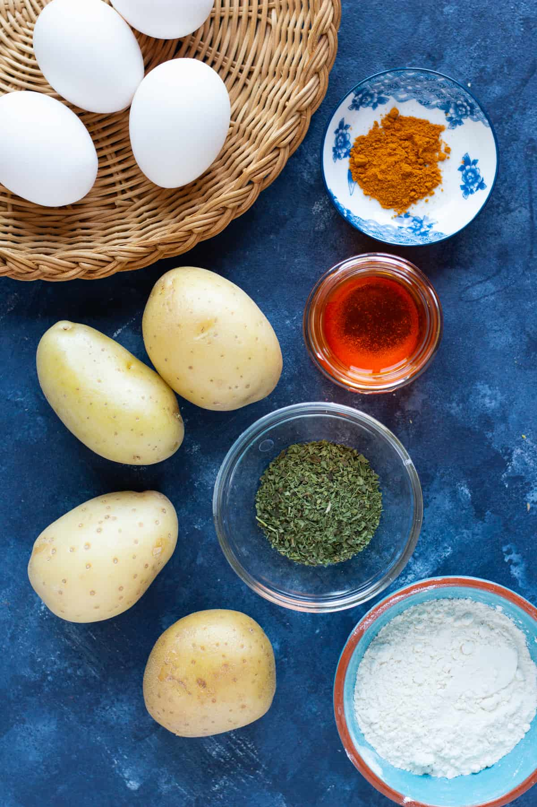

These potato patties are crispy on the outside and creamy and soft on
the inside. This is an easy potato patties recipe to make a light meal.
 Download image
Download image
What is kuku?
Kuku is Farsi for “patty.” It’s a common category of Persian dishes that
can be made with different ingredients and vegetables. Kukus can be
vegetarian or non-vegetarian. One of the common kuku recipes is
kuku sabzi
which is a popular Persian recipe made with different types of herbs.
Today’s recipe is
kuku sibzaminio patties,”
another popular kuku recipe.
Since kuku is a typical and traditional category of Iranian dishes, each
family has their own favorite patty recipes and they vary region to
region.
Ingredients to make potato patties recipe
To make this crispy potato patties, you need some simple ingredients:
- Potatoes
- Eggs
- All purpose flour
- Salt
- Spices such as black pepper, turmeric and saffron
- Dried mint

Downlad image
Prep: 15minutes minsCook: 55minutes
minsTotal: 1hour hr 10minutes
minsServings: 6 servings
Ingredients
- 4 russet potatoes, see notes
- 2 large eggs
- 1 tsp salt
- 1/4 tsp black pepper
- 1/4 tsp turmeric
- 1 tbsp bloomed saffron, see notes
- 1 tbsp dried mint , see notes
- 4 tbsp all purpose flour , see notes
- 1/4 cup vegetable oil , for frying
Instructions
- Cook the potatoes by boiling or baking them.
-
Mash the potatoes in a large bowl using a potato masher or a fork.
- Add the eggs to the potatoes and mix well.
-
Add in salt, pepper, turmeric, bloomed saffron and dried mint. Stir
well to combine.
-
Add in the flour, one tablespoon at a time. Mix after each addition.
-
The mixture should be thick enough to be handled but not doughy.
-
Heat the vegetable oil in a non stick pan over medium heat. You'll
know the oil is hot enough if you hold a toothpick in the oil and
bubbles start appearing around it.
-
Shape the patties and fry them in the hot oil in batches. Fry for
about 3 to 5 minutes on each side until crispy.
-
Place fried potato cakes on a kitchen towel to absorb their excess
oil.
Notes
-
If russet potatoes are not available, you can use yukon gold potatoes.
- You can either bake or boil the potatoes to make these patties:
-
Boil potatoes:
Peel the potatoes and cut each of them into half. Place them in a
pot and enough water to cover them. Add a generous pinch of salt and
bring it to boil. Let the potatoes boil for about 25 to 35 minutes
until fully cooked. You know a potato is fully cooked when you can
insert a knife into it without any resistance.
-
Bake potatoes:
To do so, preheat the oven to 425°F. Scrub the potatoes so the skin
is completely clean. Prick all over the potatoes using a fork and
brush with a bit of olive oil and sprinkle some salt on them. Wrap
each potato in a piece of aluminum foil and place them on a baking
sheet. Bake in the oven for about 45 to 60 minutes depending on the
size of the potatoes. Once you can easily insert a knife into the
potatoes, they’re baked completely.
-
Bloomed saffron is an optional ingredient in this recipe. Please check
out our tutorial on how to bloom saffron for more information about
saffron and how to use it.
-
Dried mint makes these patties really delicious so don’t skip it if
possible. Please don’t use fresh mint instead of dried in this recipe
as the flavor and texture won’t be the same. Nutrition
Nutrition
Calories: 237kcal |
Carbohydrates: 30g |
Protein: 6g | Fat:
11g | Saturated Fat: 8g | Cholesterol: 70mg | Sodium: 423mg |
Potassium: 618mg | Fiber:
2g | Sugar: 1g |
Vitamin A: 130IU |
Vitamin C: 8mg | Calcium:
33mg | Iron: 2mg
Nutrition information is automatically calculated, so should only be
used as an approximation.